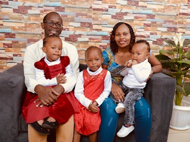

Home
About Me

Sanya Machio
My name is Sanya Machio. I am from Kenya, which is on the East coast of Africa. I love learning new skills and
this course will be exciting for me as I learn and understand the creation of websites. I am quite new to coding so I will need a lot of help from you. Please be patient with me. I am married with 3 kids.
Some of my hobbies include playing the guitar and piano. I also enjoy travelling and reading books. I love the
gospel and its impact not only in my life but of all those whom it affects. I hope by Week 14 I will be proficient
enough in this unit and looking forward to learning a lot from you my friends. Wishing you all a great semester.